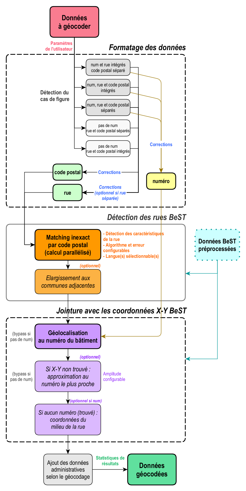

Nous expliquons ici avec plus de détail la logique du traitement
réalisé par phacochr. Celui-ci repose sur les données BeST
Address, que nous avons reformatées pour optimiser le traitement. Nous
avons également utilisé des données produites par Statbel et Urbis dans
ce reformatage. Nous ne rentrons pas dans l’explication de ces
modifications ici, et renvoyons à la page dédiée à la structure
et la mise à jour des données pour plus de précisions.
Nous nous concentrons ici sur les opérations réalisées par la
fonction phaco_geocode(), fonction de géocodage à
proprement parler. Si l’on schématise, ces opérations se classent en
trois grandes familles :
1) Formatage des données
Le programme détecte d’abord la configuration des données à géocoder, et créé les colonnes nettoyées de numéro de rue (si disponible, ce qui est souvent le cas), de rue et de code postal. Des corrections sont faites pour chacun de ces champs, afin de maximiser les chances de trouver l’adresse dans la suite des opérations.
2) Détection des rues
phacochr procède alors à une jointure inexacte
entre chacune des rues (nettoyées au point précédent) et l’ensemble des
rue de BeST Address au sein du code postal indiqué. Un matching
inexact est nécessaire pour pouvoir apparier la rue des données BeST
(disons Rue Belliard au code postal 1040) avec la même rue
telle qu’elle est écrite concrètement dans la base de données à
géocoder, potentiellement avec des coquilles ou fautes d’orthographe
(par exemple Rue Beliar avec un seul l et sans
d, également au code postal 1040). Le matching inexact est
parallélisé sur les n-1 cores du CPU afin d’augmenter la vitesse du
traitement (de nombreuses combinaisons devant être calculées). Le
paramètre error_max permet d’indiquer l’erreur acceptable
par l’utilisateur. Celle-ci est réglée par défaut à 4, ce
qui permet de trouver des rues mal orthographiées, sans les confondre
avec d’autres, avec un très bon taux de succès. Augmenter ce paramètre
accroît le pourcentage de rues trouvées, mais aussi d’erreurs réalisées.
Dans le cas où la langue dans laquelle les adresses sont inscrites est
connue, elle peut être renseignée via l’argument
lang_encoded, ce qui augmente la vitesse et la fiabilité du
processus en limitant le matching à la langue définie. Si la rue n’est
pas trouvée, le programme étend sa recherche à la commune entière et à
toutes les communes limitrophes. Cette procédure optionnelle peut être
désactivée avec le paramètre
elargissement_com_adj = FALSE.
3) Jointure avec les coordonnées géographiques
Une fois les rues trouvées, il est désormais possible de réaliser une
jointure exacte avec les données BeST géolocalisées au niveau
du numéro, celles-ci comprenant les coordonnées X-Y de l’ensemble des
adresses en Belgique. Pour ce faire, seuls les arrondissements dans
lesquels sont présents les codes postaux des données à géocoder sont
chargés en RAM, pour augmenter la vitesse du traitement et soulager
l’ordinateur. Les coordonnées des adresses qui ne sont pas trouvées sont
approximées en trouvant les coordonnées connues de l’adresse la plus
proche du même côté de la rue. L’amplitude maximale de cette
approximation est réglable avec le paramètre approx_num_max
(réglé par défaut à 50 ; indiquer 0 pour
désactiver l’approximation). Dans le cas où les coordonnées ne sont pas
trouvées, ce sont celles du numéro médian de la rue (proxy du milieu de
la rue) qui sont indiquées (option activée par défaut et désactivable
avec l’argument mid_street = FALSE). Si les données ne
possèdent pas de numéro, c’est cette information qui est indiquée comme
résultat du géocodage.
Le tableau ci-dessous schématise l’ensemble des opérations réalisées et expliquées précédemment :
